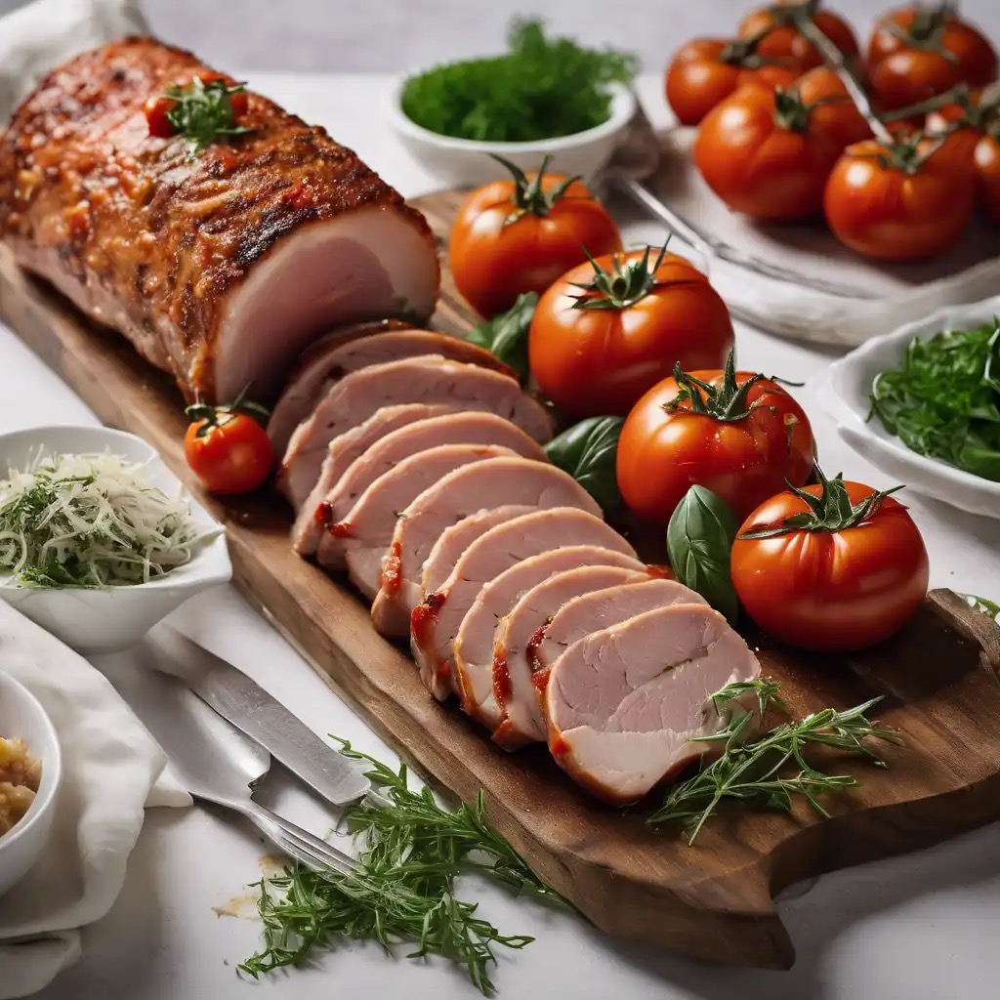

Carnes · Suínos
Lombo de porco com tomate e ervas

Ingredientes
- 1 kg de lombo de porco
- 1 cebola grande
- 1 colher (sopa) de manteiga ou margarina
- 2 xícaras (chá) de tomate descascado e peneirado (ou polpa)
- 1 xícara (chá) de migalhas de pão preto (ou branco)
- ¼ xícara (chá) de manjericão picado
- 1 ramo de alecrim ou tomilho
- 1 colher (chá) de açúcar
- Sal e pimenta-do-reino a gosto
- 3 colheres (sopa) de óleo
- ½ xícara (chá) de água
- ½ xícara (chá) de vinho branco seco
- 1 copinho de iogurte natural
Modo de preparo
- Pique a cebola e frite na manteiga. Junte o tomate e cozinhe ~20 minutos até reduzir. Acrescente pão, ervas e açúcar.
- Abra o lombo como bife, bata para afinar e tempere. Espalhe o recheio, enrole e amarre.
- Na panela de pressão, doure no óleo; junte água e vinho. Cozinhe 20 minutos após ferver. Descanse 10 minutos e fatie.
Observação: também serve com coxão mole; pão branco no lugar do preto. O iogurte consta no cartão como acompanhamento / finalização a gosto.